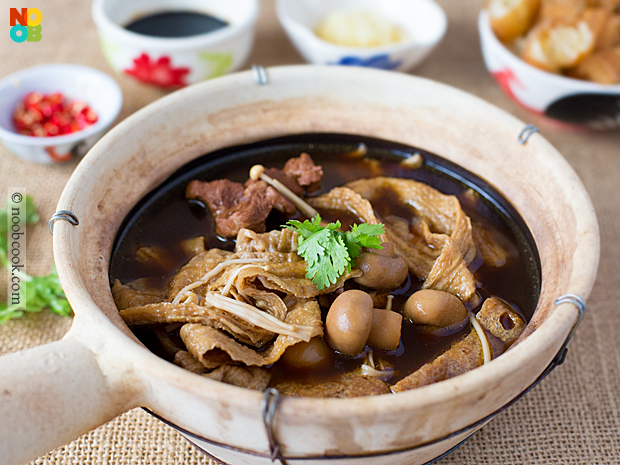

Malaysian Klang Bak Kut Teh

Description
Bak kut teh is a pork rib dish cooked in broth popularly served in
Malaysia and Singapore where there is a predominant Hokkien and Teochew
community.
Bak kut teh is commonly consumed in both Malaysia and Singapore. The
origin of bak kut teh is unclear, but it is believed to have been brought
over from Fujian, China and to have derived from the Fujianese dish known
as niu pai. In Malaysia, the dish is popularly associated with Klang,
where the locals believe it to be the place of origin of bak kut teh
Ingredients
- 600 grams pork ribs
- 1 packet klang bak kut teh spice mix
- 8 cloves garlic lightly bruised
- 2 litres water
- 4 tsp dark soy sauce
- 2 tsp light soy sauce
- 1 x 200g canned straw mushrooms drained
- 200 grams enoki mushrooms bottom trimmed and discarded
- 60 grams dried beancurd skin/”tau kee” cut to shorter lengths
- 3 dried tofu puffs/”tau pok” sliced to 2cm strips salt to taste
- lettuce torn to pieces
Condiments/Sides:
- 1 you tiao/fried fritters cut to pieces
- 8 cloves garlic minced
- 3 chilli padi sliced thinly
- 1 tbsp dark soy sauce
Directions
-
Blanch pork ribs in a pot of boiling water for a few minutes. Rinse
blanched pork ribs and set aside.
-
In a deep soup pot, add bak kut teh spice mix, 2 litres water, garlic
cloves, soy sauces and blanched pork ribs. Bring to a boil, then reduce
heat to a simmer for about an hour, or until the pork ribs are tender.
Note: Add more water as needed any time during the simmering process.
-
During the last 10 minutes of simmering, add enoki & straw mushrooms,
tau kee and tau pok. Simmer until the tau kee is softened to your
liking.
-
Season to taste with salt or light soy sauce. While the soup is hot, you
may add some lettuce. Serve with side condiments of you tiao, garlic,
dark soy sauce and chilli for a complete meal.
Noob Cook Tips:
- For best results, cook this dish in a claypot.
-
Use the wrinkled kind of dried bean curd skin for stewing bak kut teh.
The smooth type is more suitable for making fu chok (Chinese dessert)
and requires pre-soaking.